Day 2 - Targeted sequencing analysis
Learning outcomes
After having completed this chapter you will be able to:
- Explain the principles of amplicon-based (targeted) metagenomics and the rationale behind marker gene selection (16S rRNA, ITS).
- Discuss how primer design, PCR amplification and library preparation introduce biases in targeted metagenomics.
- Contrast OTU- and ASV-based workflows and justify the choice between them.
- Process Illumina paired-end 16S amplicon (eDNA) reads with the DADA2 pipeline: quality assessment, filtering, error correction, merging, chimera removal and taxonomy assignment.
- Build a Phyloseq object from the DADA2 outputs (ASV table and taxonomy) and the sample metadata.
- Assess the sequencing effort with rarefaction curves and estimate α-diversity (Shannon, Simpson, Chao1).
- Explore β-diversity with an NMDS ordination and barplots of the most abundant taxa.
- Map the samples geographically and run a LEfSe analysis to identify taxa that discriminate the sampled fractions.
Material
- Session 1: Session 1 slides
- Session 2: Session 2 slides
Targeted sequencing (Introduction and theory)
Principles of amplicon-based sequencing
Targeted (amplicon) metagenomics does not sequence all the DNA in a sample. Instead, it amplifies and sequences a specific marker gene present in all members of a target group, using PCR with primers that flank a conserved region. The variable regions between the primers then serve as a molecular fingerprint for taxonomic identification. Because only a tiny fraction of the community DNA is sequenced, amplicon approaches are cheap, tolerate low DNA yields and can reach very high numbers of samples. This great advantage comes at the price of capturing who is there, but generally not what they can do.
Marker gene selection
The choice of marker gene defines the resolution and the scope of the study:
- 16S rRNA gene: the standard marker for bacteria and archaea. Combines conserved regions (for universal primer binding) with nine variable regions (V1–V9) carrying taxonomic signal. Typical amplicons target V3–V4, V4 or V1–V2, ~250–450 bp.
- ITS (Internal Transcribed Spacer): the official marker for fungi. Much more variable than 16S, which gives excellent species-level resolution but makes reference databases and primer specificity more challenging.
- Other markers: 18S rRNA for eukaryotes, rpoB/gyrB for higher resolution in specific groups, or multi-marker panels.
Primer design, PCR biases and library preparation
Every PCR step imprints itself on the data, and understanding these biases is essential to interpret the results correctly:
- Primer coverage and specificity: no primer pair is truly universal. Mismatches at the binding site cause systematic under-detection (or complete missing) of some taxa; in silico coverage tests against reference databases should guide primer choice.
- Amplification bias: primers do not amplify all targets with equal efficiency; GC content, secondary structures and template length all play a role.
- Chimeras: partially extended molecules from one template can prime on another during later PCR cycles, creating artificial sequences that must be removed computationally.
- Tag switching / index hopping: sample cross-contamination on the sequencer, mitigated by unique dual indexes.
- Library preparation strategies: two-stage (2-step) PCR protocols (amplicon PCR + indexing PCR) are standard for Illumina sequencing; amplicon length must match the chosen read length so that paired reads overlap (e.g. V3–V4 ~460 bp with 2×250 bp reads).
Design checklist
Whenever you design your own amplicon study, it is worthy to check:
-
Which marker and variable region? Which primer pair (and its coverage)?
-
How many negatives and mock communities? How many biological replicates?
OTUs vs ASVs
Two paradigms exist to turn raw amplicon reads into discrete features:
| OTUs (Operational Taxonomic Units) | ASVs (Amplicon Sequence Variants) | |
|---|---|---|
| Inference | Greedy clustering of reads at a similarity threshold (typically 97%) | Model-based denoising of exact sequences (error model per run) |
| Resolution | Genus-ish; single-nucleotide variants collapsed | Single-nucleotide resolution |
| Reproducibility | Depends on the dataset and algorithm (pipeline-specific) | Exact sequences, that make them comparable across studies |
| Noise handling | Abundance filters (e.g. remove singletons) | Probabilistic error and chimera removal |
| Example tools | UPARSE, VSEARCH, mothur | DADA2, UNOISE3, Deblur |
Modern amplicon workflows (and this course) use ASVs: they are more precise, reproducible and better suited for combining studies.
In Session 4 we will process real 16S reads into ASVs with DADA2 and interpret the resulting community tables ecologically.
Session 3 - Targeted sequencing I
Objective
This session introduces a targeted-amplicon (16S rRNA) analysis of environmental DNA (eDNA) samples collected along the Danube river, using the R package DADA2 and the downstream analysis toolbox PhyloSeq. You start from raw Illumina paired-end reads, go through the classical denoising pipeline, and finish with ecological and statistical interpretation of the recovered ASVs (Amplicon Sequence Variants).
About the data
The dataset is extracted from a study of the bacterial diversity along the Danube river, published by Savio et al. (2015) (BioProject accession PRJNA256993). 24 samples are provided, amplified with primers Bakt_341F and Bakt_805R (V3–V4 region of the 16S rRNA gene), using 2×250 bp paired-end Illumina reads. Samples were collected at different positions along the river (downstream distance in km, pos_km), depths and size fractions (0.2 µm vs. 3 µm). A preview of the sample metadata is shown below:
Sample preview
| BioSample | Fraction | Depth | Latitude | Longitude | pos_km | geo_loc_name_country |
|---|---|---|---|---|---|---|
| SAMN02945797 | 3.0 | 0.5 | 48.31073 | 9.86037 | 2600 | Germany |
| SAMN02945798 | 0.2 | 2.0 | 48.91502 | 11.86850 | 2412 | Germany |
| SAMN02945799 | 3.0 | 2.0 | 48.91502 | 11.86850 | 2412 | Germany |
| SAMN02945800 | 0.2 | 2.0 | 48.97589 | 12.35567 | 2354 | Germany |
| SAMN02945801 | 3.0 | 2.0 | 48.97589 | 12.35567 | 2354 | Germany |
| SAMN02945802 | 0.2 | 2.0 | 48.83379 | 12.93476 | 2287 | Germany |
| SAMN02945803 | 3.0 | 2.0 | 48.83379 | 12.93476 | 2287 | Germany |
| SAMN02945804 | 3.0 | 1.8 | 48.77990 | 13.00590 | 2278 | Germany |
| SAMN02945805 | 0.2 | 7.0 | 48.52488 | 13.69373 | 2204 | Germany |
| SAMN02945806 | 0.2 | 7.0 | 48.25501 | 14.41705 | 2120 | Austria |
| SAMN02945807 | 0.2 | 10.0 | 45.30175 | 27.99807 | 167 | Romania |
| SAMN02945808 | 3.0 | 10.0 | 48.19670 | 15.05291 | 2061 | Austria |
Part I follows the steps for processing the Illumina reads: QC, cleaning, filtering, error correction, merging, and taxonomy assignment, using the DADA2 pipeline described in the DADA2 tutorial.
Part II uses these results for the downstream analysis: α-diversity, β-diversity, various plots, geographic localisation, and linear discriminant analysis (LEfSe) to highlight interesting differences and taxa.
Material
Go to Zenodo (Record 23603524) and download the compressed folder. Decompress it on your local machine, you will find:
Directory content
.
├── Environmental Microbiology - 2015 - Savio - Bacterial diversity along a 2600 km river continuum .pdf
├── EU2cleanreads
│ ├── SRR1531610_1trim.fastq.gz
│ ├── SRR1531610_2trim.fastq.gz
│ ├── SRR1531611_1trim.fastq.gz
│ ├── SRR1531611_2trim.fastq.gz
│ ├── SRR1531619_1trim.fastq.gz
│ ├── SRR1531619_2trim.fastq.gz
│ ├── SRR1531622_1trim.fastq.gz
│ ├── SRR1531622_2trim.fastq.gz
│ ├── SRR1531625_1trim.fastq.gz
│ ├── SRR1531625_2trim.fastq.gz
│ ├── SRR1531628_1trim.fastq.gz
│ ├── SRR1531628_2trim.fastq.gz
│ ├── SRR1531629_1trim.fastq.gz
│ ├── SRR1531629_2trim.fastq.gz
│ ├── SRR1531633_1trim.fastq.gz
│ ├── SRR1531633_2trim.fastq.gz
│ ├── SRR1531644_1trim.fastq.gz
│ ├── SRR1531644_2trim.fastq.gz
│ ├── SRR1531645_1trim.fastq.gz
│ ├── SRR1531645_2trim.fastq.gz
│ ├── SRR1531660_1trim.fastq.gz
│ ├── SRR1531660_2trim.fastq.gz
│ ├── SRR1531661_1trim.fastq.gz
│ ├── SRR1531661_2trim.fastq.gz
│ ├── SRR1531674_1trim.fastq.gz
│ ├── SRR1531674_2trim.fastq.gz
│ ├── SRR1531675_1trim.fastq.gz
│ ├── SRR1531675_2trim.fastq.gz
│ ├── SRR1531689_1trim.fastq.gz
│ ├── SRR1531689_2trim.fastq.gz
│ ├── SRR1531690_1trim.fastq.gz
│ ├── SRR1531690_2trim.fastq.gz
│ ├── SRR1531700_1trim.fastq.gz
│ ├── SRR1531700_2trim.fastq.gz
│ ├── SRR1531707_1trim.fastq.gz
│ ├── SRR1531707_2trim.fastq.gz
│ ├── SRR1531708_1trim.fastq.gz
│ ├── SRR1531708_2trim.fastq.gz
│ ├── SRR1531715_1trim.fastq.gz
│ ├── SRR1531715_2trim.fastq.gz
│ ├── SRR1531718_1trim.fastq.gz
│ ├── SRR1531718_2trim.fastq.gz
│ ├── SRR1531721_1trim.fastq.gz
│ ├── SRR1531721_2trim.fastq.gz
│ ├── SRR1531722_1trim.fastq.gz
│ ├── SRR1531722_2trim.fastq.gz
│ ├── SRR1531727_1trim.fastq.gz
│ └── SRR1531727_2trim.fastq.gz
├── EU2dada2downstream.html
├── EU2dada2downstream.Rmd
├── EU2dada2.html
├── EU2dada2.Rmd
├── PRJNA256993_SraRunTable.txt
├── rep-seqs.fna
├── seqtab2.nochim.rds
├── seqtab-nochim.txt
├── seqtab-taxa.txt
├── silva_nr99_v138.1_wSpecies_train_set.fa.gz
└── taxa.rds
What you find here:
- The cleaned reads (
EU2cleanreads) - The sample metadata (
PRJNA256993_SraRunTable.txt) - The DADA2 and taxonomy assignment outputs pre-computed for you, needed for Part II (
seqtab2.nochim.rds,seqtab2.nochim.rds,taxa.rds,rep-seqs.fna) - The Silva reference database v138.1 for taxonomy assignment (
silva_nr99_v138.1_wSpecies_train_set.fa.gz)
Skipping Part I?
If you prefer (or reach the end of the session), you can skip the DADA2 denoising step and load directly the pre-computed seqtab2.nochim.rds and taxa.rds files to start the downstream analysis of Part II.
Part I - Sequence processing with DADA2
For the first part we will process the 24 samples of 16S amplicon reads (2×250 bp paired-end Illumina reads) that have already been trimmed of primers and adapters by cutadapt. The workflow follows the steps of the DADA2 tutorial: quality assessment, filtering, learning the error rates, denoising, merging paired reads, chimera removal and taxonomy assignment. DADA2 implements a model-based error-correction method that resolves Amplicon Sequence Variants (ASVs) differing by just a single nucleotide.
Experimental setting
Open RStudio, and set the downloaded directory as working directoy (i.e. ~/Desktop/eDNAworkshop2026). Create a new R file and start writing and executing the code as follows:
Install packages
Remember that before starting running the code you need to install the required packages.
RStudio
| Experimental setting | |
|---|---|
1 2 3 4 5 6 7 8 9 10 11 12 13 14 15 16 17 18 19 | |
Data QC: quality profiles
DADA2 includes a plotting function to inspect the quality of the reads (analogous to what you did with FastQC in Day 1). Here we plot the quality profiles of the first forward and reverse reads:
RStudio
| Quality profiles | |
|---|---|
21 22 23 | |
Quality profiles
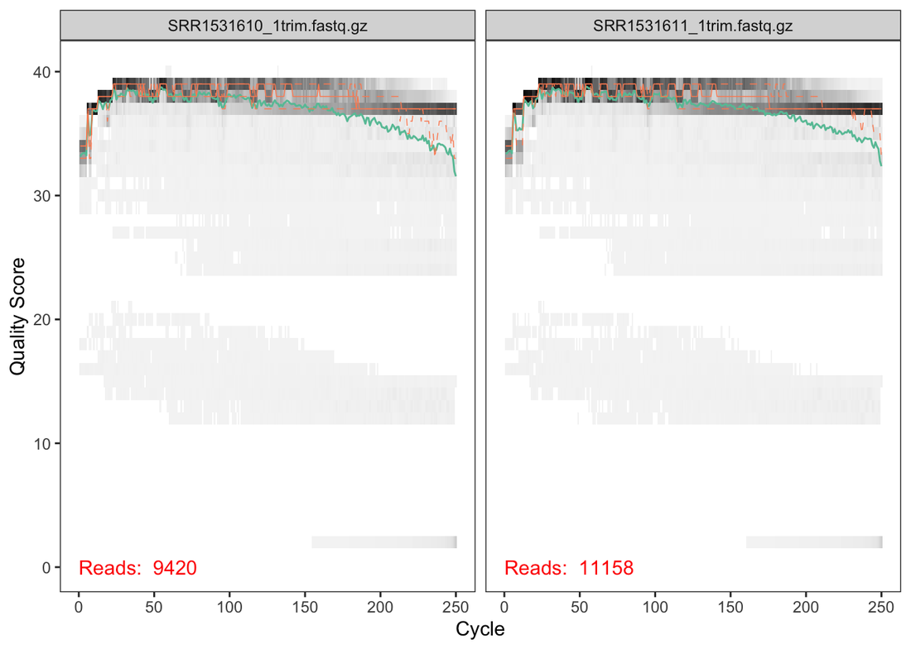
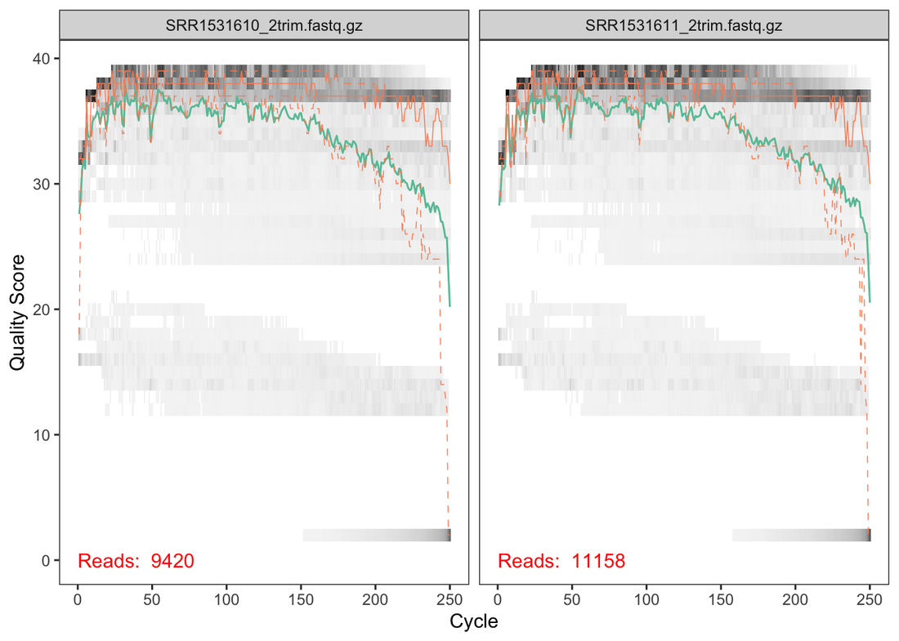
Read quality
One can see that the QC plot show good quality for Forward reads and a lower quality for Reverse reads after position 230.
Filtering and truncation of reads
We filter the reads with the standard parameters: maxN=0 (DADA2 requires no Ns), truncQ=2, rm.phix=TRUE and maxEE=2. The maxEE parameter sets the maximum number of “expected errors” allowed in a read, which is a better filter than simply averaging quality scores. In this case we do not truncate the reads (truncLen=0) but in other cases it could be adjusted, e.g. truncLen=c(220,160).
RStudio
| Filter and trim | |
|---|---|
25 26 27 28 29 30 31 32 33 34 | |
reads.in reads.out
SRR1531610_1trim.fastq.gz 9420 8172
SRR1531611_1trim.fastq.gz 11158 9781
SRR1531619_1trim.fastq.gz 11625 10213
SRR1531622_1trim.fastq.gz 12301 10825
SRR1531625_1trim.fastq.gz 7650 6639
SRR1531628_1trim.fastq.gz 9388 8293
Learn the error rates and correct the reads
Slow step
This part is relatively slow (about 5 min on a laptop).
DADA2 learns the error rates from the data itself using a machine-learning algorithm, once for the forward and once for the reverse reads:
RStudio
| Learn the error rates | |
|---|---|
36 37 38 39 40 | |
Estimated errors
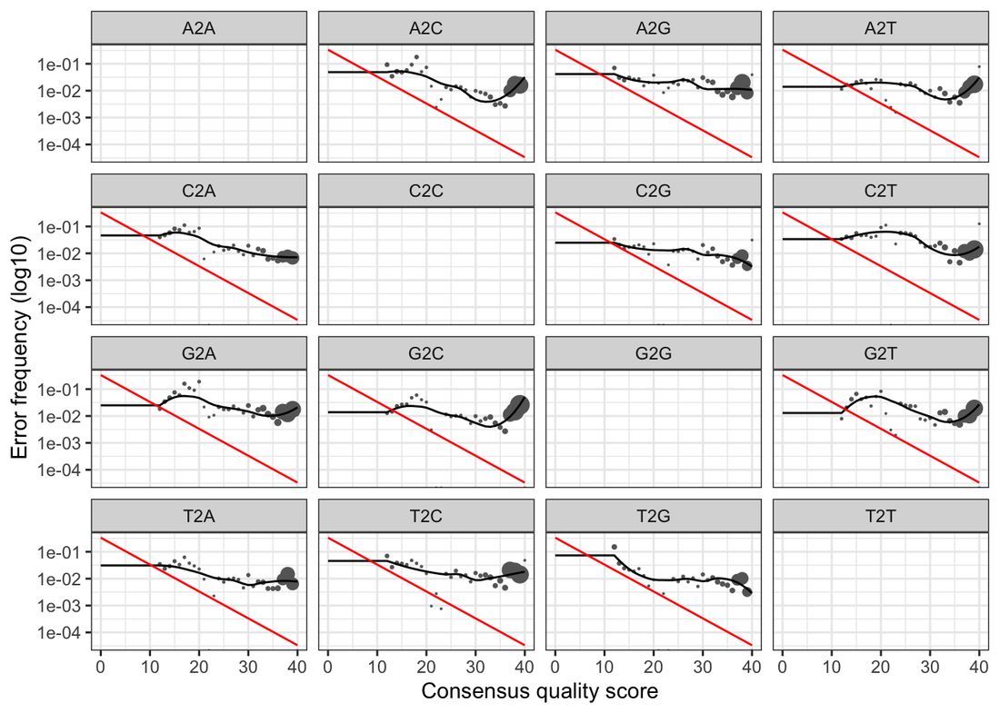
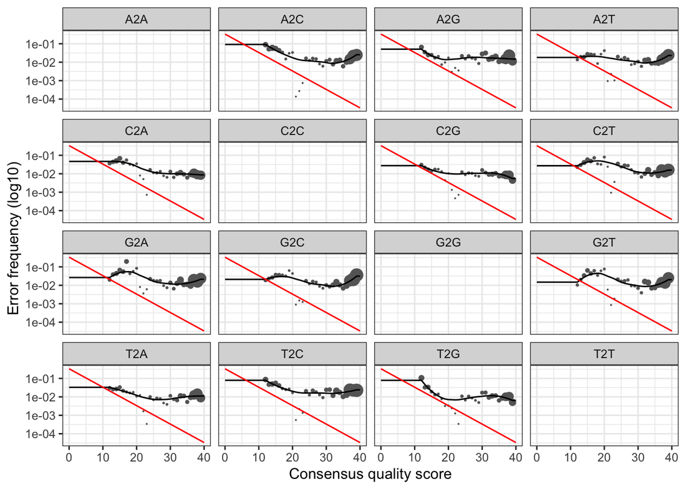
Error rates
The error rates for each possible transition (A->C, A->G, …) are shown. Points are the observed error rates for each consensus quality score. The black line shows the estimated error rates after convergence of the machine-learning algorithm. The red line shows the error rates expected under the nominal definition of the Q-score.
Everything looks reasonable, so we can proceed with confidence and apply the core sample-inference algorithm:
RStudio
| Denoise the reads | |
|---|---|
42 43 44 45 | |
dada-class: object describing DADA2 denoising results
152 sequence variants were inferred from 4774 input unique sequences.
Key parameters: OMEGA_A = 1e-40, OMEGA_C = 1e-40, BAND_SIZE = 16
Pooling samples
By default, the dada function processes each sample independently. Pooling information across samples can increase sensitivity to sequence variants that may be present at very low frequencies in multiple samples. dada(..., pool=TRUE) performs standard pooled processing, whereas dada(..., pool="pseudo") (used above) shares information between samples while processing them independently, approximating pooled inference in linear time. You’ll find an explanation here.
Merging the reads
Now we merge the forward and reverse reads into a single amplicon sequence and write a FASTA file with the merged sequences per sample:
RStudio
| Merge paired reads | |
|---|---|
47 48 49 50 51 52 53 54 55 56 57 58 | |
Construct the sequence table
We build a table of counts for all merged sequences (one column per ASV) and inspect the distribution of sequence lengths:
RStudio
| Sequence table | |
|---|---|
60 61 62 63 64 65 | |
312 424 438 441 453 454 455 456 457 458 459 460 461 464 468
13 1 2 1 3 993 702 72 613 785 1829 1 12 3 1
469 471 472 473 474 475 476 477 478 479 480
6 26 36 138 1235 24 23 1 376 1177 38
Cutting the band
You can remove non-target-length sequences from the sequence table, e.g. seqtab2 <- seqtab[,nchar(colnames(seqtab)) %in% 250:262]. This is analogous to “cutting a band” in silico to get amplicons of the targeted length. Here we see multiple peaks (not a good sign), so we can cut around the expected V3–V4 length.
Here we see that we have multiple peaks… not a good sign, anyway we cut around them,
RStudio
| Keep target-length ASVs | |
|---|---|
67 | |
Remove chimeras
Chimeras are PCR artifacts that must be identified and removed. We use the consensus method and check the proportion of reads kept:
RStudio
| Remove chimeras | |
|---|---|
69 70 71 72 73 74 75 76 | |
Track reads through the pipeline
It is important to keep track of how many reads survive each step. We build a table that summarises the number of reads at each stage of the pipeline:
RStudio
| Track read counts | |
|---|---|
78 79 80 81 82 83 84 | |
input filtered denoisedF denoisedR merged nonchim
SRR1531610 9420 8172 5805 5919 5167 4465
SRR1531611 11158 9781 7048 6769 5414 5182
SRR1531619 11625 10213 9055 8934 7882 5680
SRR1531622 12301 10825 9026 8751 7710 5891
SRR1531625 7650 6639 5850 5773 4959 3548
SRR1531628 9388 8293 6980 6836 5998 5020
Looks good! We kept the majority of our raw reads, and there is no over-large drop associated with any single step.
Assign taxonomy
Slow step
This part is very slow: about 45 min on an old laptop! Once launched, go for a break.
We assign a taxon to each ASV using the reference Silva database v138.1:
RStudio
| Assign taxonomy | |
|---|---|
86 87 88 89 90 91 | |
Kingdom Phylum Class Order
[1,] "Bacteria" "Cyanobacteria" "Cyanobacteriia" "Chloroplast"
[2,] "Bacteria" "Cyanobacteria" "Cyanobacteriia" "Chloroplast"
[3,] "Bacteria" "Proteobacteria" "Gammaproteobacteria" "Burkholderiales"
[4,] "Bacteria" "Verrucomicrobiota" "Verrucomicrobiae" NA
[5,] "Bacteria" NA NA NA
[6,] "Bacteria" "Proteobacteria" "Gammaproteobacteria" "Burkholderiales"
Family Genus Species
[1,] NA NA NA
[2,] NA NA NA
[3,] "Comamonadaceae" "Limnohabitans" NA
[4,] NA NA NA
[5,] NA NA NA
[6,] "Comamonadaceae" "Limnohabitans" NA
RStudio
| Assign taxonomy | |
|---|---|
93 94 95 96 97 98 99 100 | |
This is the end of Part I. Move on to Part II for the downstream analysis.
Session 4 - Targeted sequencing II
Part II - Downstream analysis with PhyloSeq
In this second part we analyse the DADA2 outputs with PhyloSeq and friends: α-diversity, β-diversity, barplots, geographic localisation and a LEfSe analysis. If you skipped Part I, load the pre-computed seqtab2.nochim.rds and taxa.rds files from the Material section.
Experimental setting
Open RStudio, and set the downloaded directory as working directoy (i.e. ~/Desktop/eDNAworkshop2026). We will build a phyloseq object that combines the ASV count table, the sample metadata and the taxonomy table. Hence, create a new R file and start writing and executing the code as follows:
RStudio
| Experimental setting | |
|---|---|
1 2 3 4 5 6 7 8 9 10 11 12 13 14 15 16 17 18 19 20 21 22 23 24 25 26 27 28 29 | |
phyloseq-class experiment-level object
otu_table() OTU Table: [ 4064 taxa and 24 samples ]
sample_data() Sample Data: [ 24 samples by 10 sample variables ]
tax_table() Taxonomy Table: [ 4064 taxa by 7 taxonomic ranks ]
refseq() DNAStringSet: [ 4064 reference sequences ]
Rarefaction curves
Plotting the rarefaction curve is a quality check to verify that we reached saturation of the sampling.
RStudio
| Rarefaction | |
|---|---|
31 32 | |
Rarefaction curves
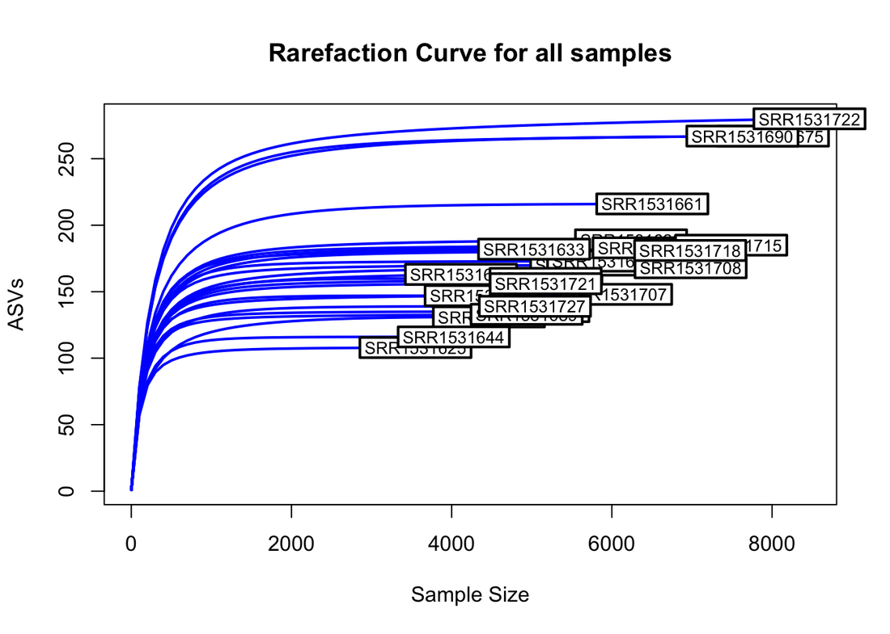
Question
Looking at these curves, are all samples saturated? If you had to pick a rarefaction depth to compare samples, which depth would you choose and why?
Richness plots
We then add the ASV sequences to the object and rename the ASVs, and check the α-diversity with several richness indices, either by Depth or by Fraction, along the river:
RStudio
| Alpha diversity | |
|---|---|
34 35 36 37 38 39 40 41 42 | |
Alpha diversity plots
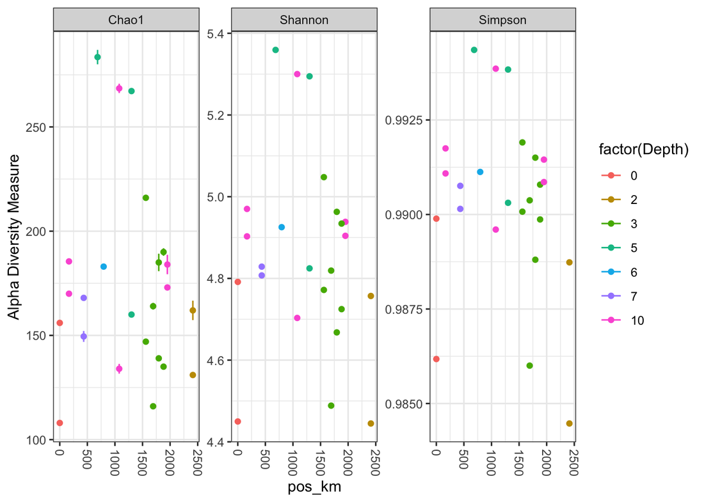
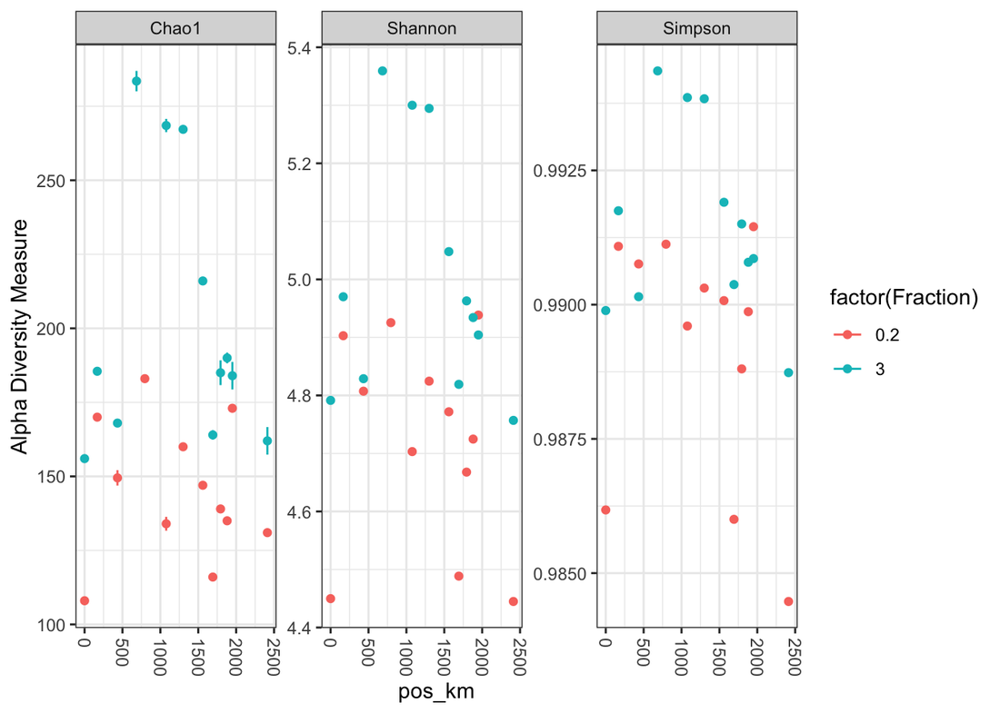
Question
Does there appear to be a trend with distance along the river (pos_km)? Is this trend stronger for one of the fractions or depths?
Shannon plot with regression
We now focus on the Shannon diversity, plotting the regression line by Fraction size along the river:
RStudio
| Shannon diversity with regression | |
|---|---|
44 45 46 47 48 49 50 51 52 53 54 55 56 57 58 59 | |
Shannon diversity regression
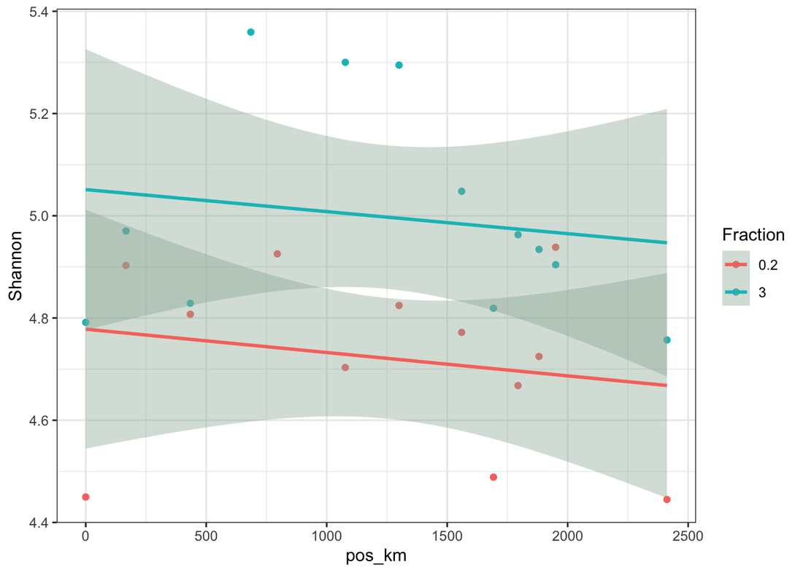
Question
Do you see a clear separation of the Fraction? The regression lines have confidence intervals. Do the intervals overlap between fractions across most of the river, or do they suggest a difference?
Beta diversity
We transform the data to proportions (appropriate for Bray-Curtis distances) and ordinate the samples with a non-metric multidimensional scaling (NMDS).
RStudio
| Beta diversity | |
|---|---|
61 62 63 64 65 | |
NMDS ordination
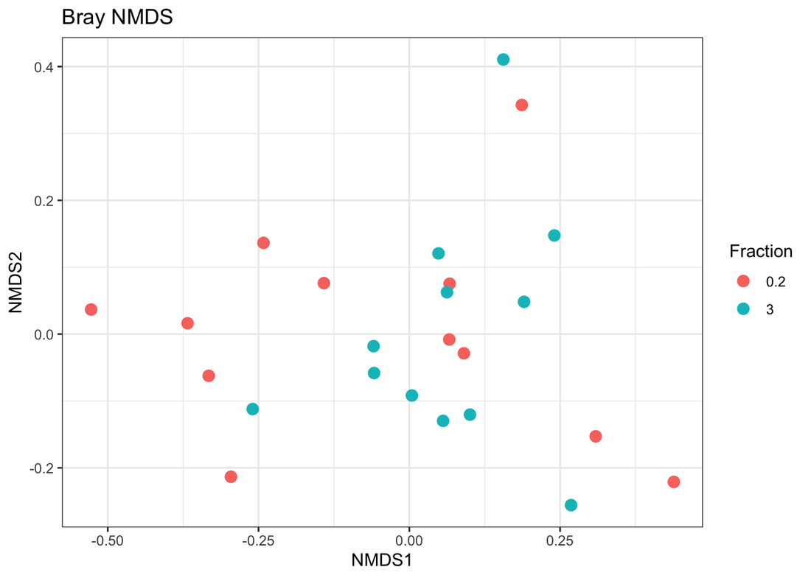
Question
Do you see clustering by Fraction, by country, or by position along the river? If not, what other factors from the metadata could explain the spread?
Abundance plots
We also plot the genus and phylum abundance per sample:
RStudio
| Barplot top 20 | |
|---|---|
67 68 69 70 71 | |
Barplot top 20
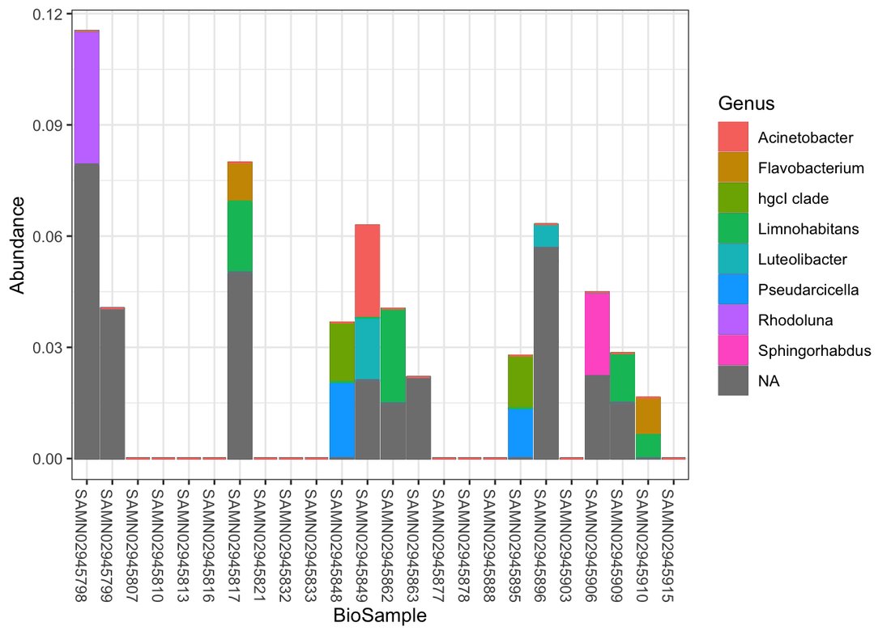
Question
Which taxa appear to be shared across most samples? Are there any samples that look particularly different at the genus level?
RStudio
| Barplot top 1000 | |
|---|---|
71 72 73 74 75 | |
Barplot top 1000
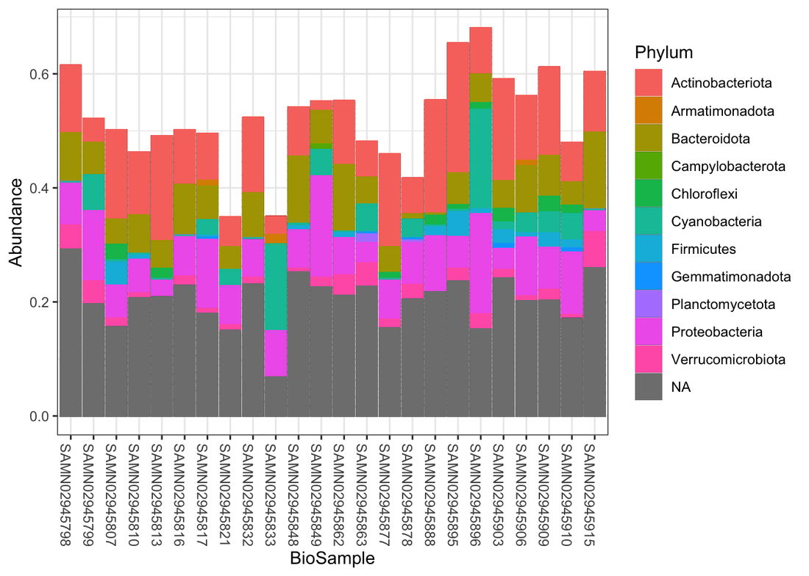
Interpretation
Many samples do not contain one of the 20 most abundant genera! However, some taxa are typical of fresh water (Acinetobacter, Flavobacter, Rhodoluna, Limnohabitans, Pseudarcicella, Sphingorhabdus) or sludge (Luteolibacter).
Question
Are there phylum-level differences between samples or between fractions? Are there any samples that appear compositionally distinct from the rest?
Phylogeo localization
What about the geographic localization of the samples? We use the leaflet package to map the sample coordinates to geographic maps:
Extra packages
This part of the analysis requires the installation of additional packages.
RStudio
| Phylogeo localization | |
|---|---|
77 78 79 80 81 82 83 84 85 86 87 88 89 90 91 92 93 94 95 96 | |
Phylogeo localization
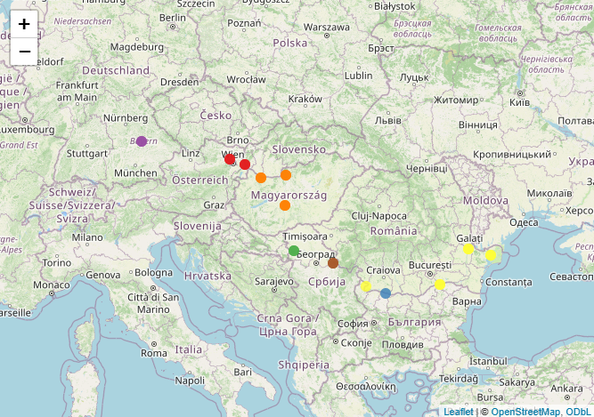
Interactive map
The interactive map will be reachable on the viewer tab in the output pane.
LEfSe analysis
Can we identify taxa that are specific for the two fractions (0.2 µm vs. 3 µm)? We use LEfSe (Linear discriminant analysis Effect Size) on the genus table with the microbiomeMarker package:
RStudio
| LEfSe analysis | |
|---|---|
98 99 100 101 102 103 104 | |
LEfSe
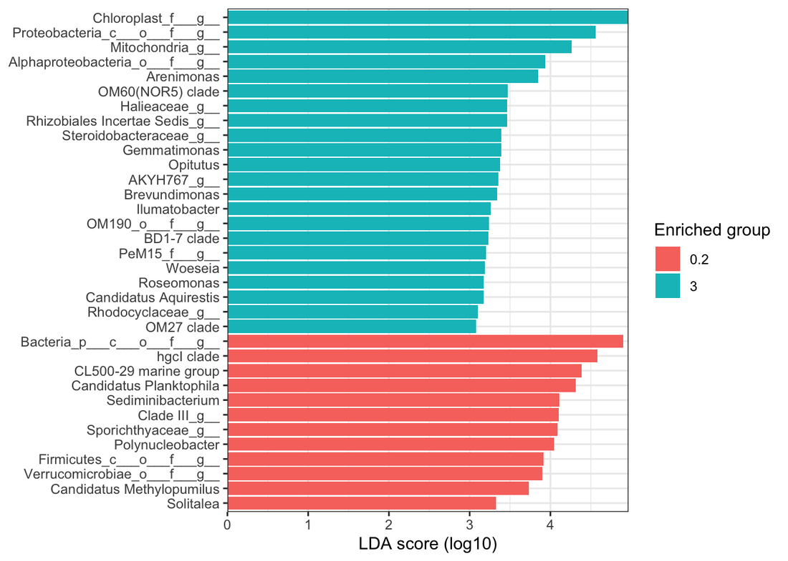
Some taxa are known from lakes, rivers or seas (CL500-29 marine group, Halioglobus, Polynucleobacter) or from sediment/water interfaces (Gemmatimonas, Opitutus, Brevundimonas, Ilumatobacter, Sediminibacterium, Solitalea), and even some potential pathogens (Roseomonas). The hgcl-clade group is typical of areas associated with urban and industrial activities.
Optional exercises
These exercises use the same data and code as above. They are designed to be short (10-30 minutes) and to extract additional insights from the dataset.
Exercise 1: Test different filtering thresholds (Part I)
Goal: Evaluate the trade-off between read retention and stringency.
- Go back to
filterAndTrim(). Try a more stringent filter e.g.maxEE=c(1,1)(or a more lenient one) keeping all other parameters the same. - Re-run the downstream steps until building
track(or just compareoutand the finaltracktable).
Questions
- How many reads were lost compared to the original
maxEE=c(2,2)run? - Did the proportion of merged/non-chimeric reads change? Is this trade-off worth it for this dataset?
Tip
You don’t need to re-run taxonomy assignment to answer this, comparing track is sufficient.
Exercise 2: Rarefy and compare alpha diversity (Part II)
Goal: Account for different sequencing depths before computing richness.
Using vegan (already loaded), rarefy the counts to an even depth.
RStudio
library(vegan)
# find a depth (e.g. min sample sum)
sort(sample_sums(ps))
set.seed(123)
ps.rar <- rarefy_even_depth(ps, sample.size = min(sample_sums(ps)), rngseed = 123, replace = FALSE)
plot_richness(ps.rar, x="pos_km", color="factor(Fraction)", measures=c("Shannon","Observed"))
Questions
- Did your choice of rarefaction depth exclude any samples? If so, are they representative of a particular fraction/country?
- How do the Shannon/Observed trends compare to the non-rarefied ones from the tutorial?
Exercise 3: Explore beta diversity with a presence/absence metric (Part II)
Goal: See if abundance weighting drives the NMDS pattern.
RStudio
# Jaccard (presence/absence)
ord.nmds.jac <- ordinate(ps.prop, method="NMDS", distance="jaccard", binary=TRUE)
plot_ordination(ps.prop, ord.nmds.jac, color="Fraction", title="Jaccard (binary) NMDS") + geom_point(size=3)
Questions
- Is the ordination structure different from Bray-Curtis?
- Does this suggest that the pattern is driven more by which taxa are present, or by their relative abundances?
Exercise 4: Plot abundance at a different taxonomic rank (Part II)
Goal: Get a coarser (or different) view of the community.
Try plotting the top families instead of genera/phyla.
RStudio
top15_fam <- names(sort(taxa_sums(ps), decreasing=TRUE))[1:15]
ps.top15fam <- transform_sample_counts(ps, function(OTU) OTU/(sum(OTU)+1))
ps.top15fam <- prune_taxa(top15_fam, ps.top15fam)
plot_bar(ps.top15fam, x="BioSample", fill="Family") + geom_bar(aes(color=Family, fill=Family), stat="identity", position="stack")
Questions
- Are there families that are ubiquitous across the river?
- Do any families track with the fraction split better than the genera shown before?
Exercise 5: LEfSe at a different rank (Part II)
Goal: Find discriminant taxa at higher/lower resolution.
RStudio
lef_out_ph <- microbiomeMarker::run_lefse(ps, group="Fraction", taxa_rank="Phylum")
microbiomeMarker::plot_ef_bar(lef_out_ph)
lef_out_fam <- microbiomeMarker::run_lefse(ps, group="Fraction", taxa_rank="Family")
microbiomeMarker::plot_ef_bar(lef_out_fam)
Questions
- What differences do you see between Phylum, Family and Genus level results?
- At which rank is the biological interpretation the clearest for this fraction comparison?
Additional resources
If you want to explore more in detail how you can expand your analysis, please check the following resources: